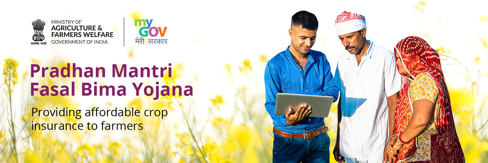

Lose of crops is a major issue in India and it leads to farmer suicide as well. To address this issue, the central government launched Pradhan Mantri Fasal Bima Yojana (PMFBY) in the year 2016.
It is a crop insurance-related agriculture scheme that attempts to offer farmers financial assistance and risk reduction in the event of crop loss or damage caused by natural disasters, pests, and diseases. It aims to guarantee the agricultural sector's overall stability and to shield farmers from financial hardship caused by crop losses.
○ Under this government scheme for farmers in India all food crops, oilseeds, and annual commercial/horticultural crops are covered by the plan.
○ It comprises hazards from pre-sowing to post-harvest, such as drought, floods, cyclones, pests, diseases, and so on.
○ The farmer and the government split the cost of crop insurance premiums. Farmers' premiums are subsidized, making insurance more inexpensive and accessible.
○ All the farmers who have been granted Seasonal Agricultural Operations (SAO) loans from financial institutions can apply.
○ Small-scale and marginal farmers